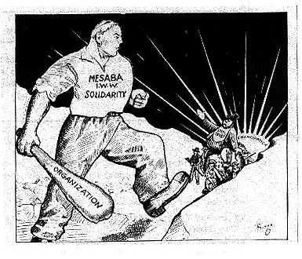

Submitted on Fri, 07/21/2006 - 3:45am
By Paul Krehbiel - Labor Notes, July 2006
Want a stronger union at work? Consider building a stewards council.
I was a rank-and-file worker at a company with a good steward structure years ago, so I knew something about how it worked. After I began working as a union representative for Service Employees (SEIU) Local 660, I was assigned to Harbor-UCLA Medical Center in Los Angeles. I saw immediately that the union there was weak.
With only five stewards for 1,700 workers, demoralization was high. Many members complained that the union did nothing, and they wanted out. The only solution was to build the union at the facility. . .
. . .Soon, word was out that the union was alive and growing.Workers in other areas asked to become stewards. We asked them to help on a project and then brought them aboard.
Within a year and a half, we had 35 stewards and the union was winning some victories. Things were far from perfect, but management knew that the union was there.
Submitted on Mon, 06/12/2006 - 3:15am
Companer@s!
Con el crecimiento desde los ultimos anos de nuestro organizacion en comunidades de trabajador@s que hablan principalmente espanol, es evidente la necesidad de propaganda como: folletos, documentos oficiales, revistas y contenido en iww.org. En conversaciones con otros miembros y simpatizantes del IWW, existe el interes en realizar y obtener los recursos para este proyecto. Un boletin del IWW en espanol es util para el trabajo de comunicacion en las comunidades donde se habla español y el IWW es activo. El grupo de trabajadores y simpatizantes del IWW en Mexico desean colaborar con articulos para el proyecto, porque seria una forma de comunicacion excelente para las organizaciones y sindicatos en America Latina y España, que el Comite de Solidaridad Internacional tiene relaciones con ellos; es un buen ejemplo de proyecto sin fronteras! Considero los siguientes conceptos basicos como una propuesta para el boletin:
Submitted on Tue, 05/30/2006 - 11:10am
By Jeff Pilacinski, Twin Cities GMB
On Saturday, June 3 we remember the valiant struggle of over 15,000 fellow workers and through our continued agitating in 2006, carry their fighting spirit forward. This date marks the 90th anniversary of the great mine workers strike on Minnesota’s Mesabi, Cuyuna, and Vermillion Iron Ranges – a strike that threatened the economic grip of the U.S. Steel war profiteers and strained relations between several prominent Wobbly organizers and the union’s general headquarters.
After a large uprising was crushed with the help of immigrant strike breakers in 1907, Minnesota mine workers were poised to confront the steel trust once again. In a report to the Minneapolis headquarters of the IWW’s Agricultural Workers Organization dated May 2, 1916, one organizer had “never before found the time so ripe for organization and action as just now.” The appeal from one Minnesota miner in the May 13, 1916 issue of the Industrial Worker summarized the workers’ discontent best as “the spirit of revolt is growing among the workers on the Iron Range,” and that there was a need for “workers who have an understanding of the tactics and methods of the IWW and who would go on the job, and agitate and organize on the job.” Less than a month later, an Italian worker at the St. James underground mine in Aurora opened his pay envelope and raged over his meager earnings under the corrupt contract system, whereby wages were based upon the load of ore dug and supplies used, not hours worked. By the time other miners arrived at the St. James for the night shift, production at the mine was halted. All pits in Aurora were soon shut down as the strikers proclaimed, “We’ve been robbed long enough. It’s time to strike.”
Submitted on Wed, 02/15/2006 - 5:12am
 "By building organizations based on solidarity, rather than on
bureaucratic chain-of-command, we build organizations that by their very
existence help to bring a new kind of society into being."
--Staughton Lynd, Solidarity Unionism
"By building organizations based on solidarity, rather than on
bureaucratic chain-of-command, we build organizations that by their very
existence help to bring a new kind of society into being."
--Staughton Lynd, Solidarity Unionism
For the first time in recent memory wobblies from all over will be
meeting with the primary objective of discussing organizing. The
Organizing Summit is what many wobs have been wanting for years. It is a
chance to focus on organizing in the union and what it means to say,
"Every member is an organizer."
The weekend will be hosted by the Austin GMB and was proposed at General
Assembly 2005 in the hopes of supporting the work of the Organizing
Department Formation Committee (ODFC). The assembly endorsed the Summit
and the ODFC has also endorsed the meeting.
Submitted on Fri, 01/13/2006 - 7:05am
ΔΙΕΘΝΕΣ ΜΗΝΥΜΑ ΑΛΛΗΛΕΓΓΥΗΣ ΠΡΟΣ ΟΛΟΥΣ ΤΟΥΣ ΕΥΡΩΠΑΙΟΥΣ ΛΙΜΕΝΕΡΓΑΤΕΣ ΑΠΟ ΤΟΥΣ ΒΙΟΜΗΧΑΝΙΚΟΥΣ ΕΡΓΑΤΕΣ ΤΟΥ ΚΟΣΜΟΥ (IWW)
Σύντροφοι εργάτες,